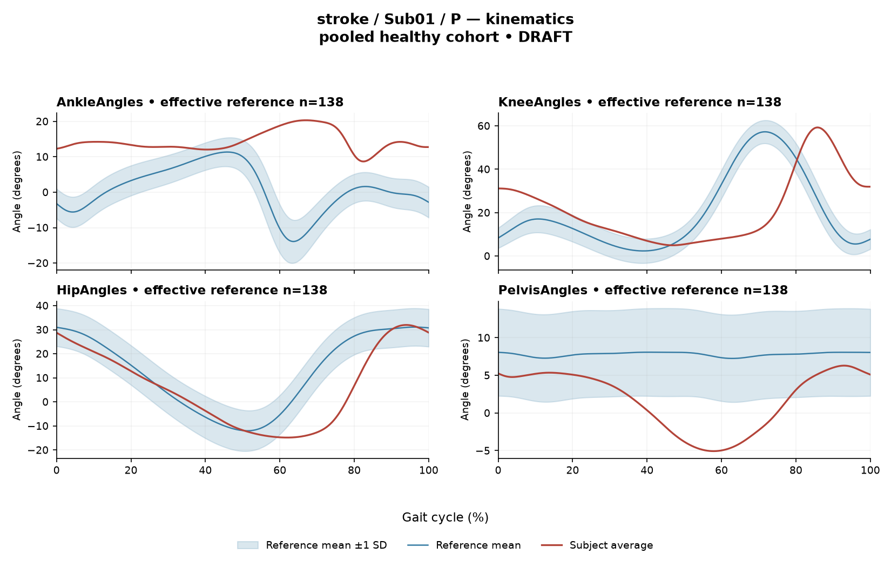

rater2 / Report 1 of 105 / Review spreadsheet row 2
REB162D9F656B2188
Case: stroke_Sub01_P
Read this report independently. Record judgments in the workbook. Browser pages do not save ratings.
Report: exact saved text
# Gait Report — Limited-Evidence Interpretation **Subject:** Sub01_P **Group:** stroke **Side reported:** paretic **Interpretation version:** limited-evidence-v3.1-candidate *Scope: descriptive interpretation of supplied quantitative summary only. Not a diagnosis, not an assessment of walking safety or independence, and not a basis for treatment selection.* --- ## 1. Objective Findings **Participant and side.** This participant belongs to the stroke cohort, and all data summarized below come from the **paretic** side. No non-paretic-side values are included in this input, so no within-subject side-to-side comparison can be made here. **Spatiotemporal measures.** - Gait speed **0.25 m/s**, which falls in the "household ambulator (<0.4 m/s)" band. This label denotes a speed band only; it does not measure walking independence, safety, assistive-device use, or real-world community mobility. - Cadence **64.7 steps/min**. - Step length symmetry index **−46.3%** using the **successive-footfall** definition (each heel at its own initial contact). By the stated sign convention, a negative value means the **paretic step is shorter** than the non-paretic step. The alternative instantaneous definition can yield a different value for some subjects; only the successive-footfall value is supplied here, so the magnitude should not be treated as definition-independent. **Cycle definition.** The released paretic cycle runs from initial contact of that limb at 0% to the next initial contact of the same limb at 100%. These are two successive occurrences of the same event, not one instant. **No intermediate gait event is supplied** — no individual toe-off, no stance/swing boundary, no phase markers. All timing below is therefore expressed only as a percentage of the analysis cycle, and percentages are not translated into gait phases. **Reference used.** Deviation scores compare this subject to **138 pooled healthy subjects** (1001 phase points, source: main_cohort_excel). This reference pools both body sides and all ages and is **not age- or speed-matched** to this subject. Critically, the healthy cohort's self-selected speeds span 0.80–1.79 m/s; at **0.25 m/s this subject falls well below that floor, so no speed-matched healthy reference exists in this dataset.** Every deviation reported below therefore conflates slow-walking effects with stroke-related control changes, and these two contributions cannot be separated from these data. Deviations are described as differences from this specific empirical reference — they do not by themselves establish a disease effect, a mechanism, or a clinical diagnosis. **Channels available and not available.** - Supplied: sagittal kinematics for ankle, knee, hip, pelvis; averaged EMG envelopes for GAS, RF, VL, BF, ST, TA, ERS; two co-contraction indices. - Not included in this input: coronal and transverse plane kinematics; non-paretic-side data; individual toe-off and matched muscle-specific timing references; stride-level variability; raw-signal quality checks; expert plots; age, sex, time post-stroke, and stroke clinical scores. These are **not supplied to this interpretation task**; that is distinct from being documented as absent recordings in the source release. - Dataset-level note: a local array audit found 614 evaluable EMG combinations of 700, with 86 lacking valid nonzero paired samples. Whether any of this subject's channels were affected is not stated here. --- ## 2. EMG Envelope and Threshold Findings **How to read these numbers.** All values come from **ensemble-averaged** envelopes. Normalization uses a shared maximum across available strides before averaging (participant-, side-, and muscle-specific in the stroke release; **not shared between sides**). Consequently: amplitudes are **relative envelope values**, not neural drive, force, or strength; muscles must not be ranked as stronger or weaker against each other; and nothing here describes stride-to-stride variability. Detected intervals are properties of the averaged curve under a fixed rule — **envelope exceeds 20% of that curve's own peak, minimum retained interval 3% of the cycle**. They are not physiological onsets, offsets, contraction durations, or evidence of inactivity outside the intervals, and a pattern in the mean curve should not be assumed to recur in every individual stride. | Muscle | Retained interval(s) (% cycle) | Coverage | Boundary | Peak norm. amp. | Max abs z (location) | |---|---|---|---|---|---| | GAS | 86–76 (wraps) | 90% | above threshold across boundary | 0.46 | 10.7, above reference, at 68% | | RF | 77–88; 92–66 (wraps) | 86% | above threshold across boundary | 0.50 | 4.3, above reference, at 81% | | VL | 92–63 (wraps) | 71% | above threshold across boundary | 0.45 | 4.2, above reference, at 34% | | BF | 42–50; 50–58; 60–76; 82–39 (wraps) | 89% | above threshold across boundary | 0.55 | 2.3, above reference, at 21% | | ST | 42–46; 51–55; 58–76; 88–37 (wraps) | 74% | above threshold across boundary | 0.56 | 4.1, above reference, at 24% | | TA | 12–63; 75–6 (wraps) | 82% | above threshold across boundary | 0.51 | 4.1, above reference, at 37% | | ERS | 0–100 | 100% | above threshold across boundary | 0.63 | 7.7, above reference, at 78% | **Descriptive observations.** - Every recorded channel shows an interval that **wraps the 100%→0% cycle boundary**, i.e. the averaged envelope remains above its 20%-of-own-peak threshold across the cycle-defining initial-contact boundary. This is a statement about mean-envelope continuity at that boundary under this rule, not about a physiological event occurring there. - Reported coverage is high in all channels (71%–100% of the cycle above threshold). For **ERS**, the retained interval is written as spanning the full analysis window with coverage reported as 100%. Because the supplied figure is a rounded display value, this evidence is consistent with continuous supra-threshold mean envelope but does not on its own establish that no brief below-threshold sample exists; the same caution applies to the other high-coverage channels. Likewise, the gaps between retained intervals in BF, ST, RF and TA indicate only that no interval meeting the threshold-plus-duration criteria was retained there — they do not establish muscular silence. - An onset written as 0% (ERS) is the **analysis-window boundary**, not a detected physiological onset. - Anatomically, GAS is an ankle plantarflexor, TA a dorsiflexor, RF and VL knee extensors (RF also a hip flexor), BF and ST knee flexors/hip extensors, and ERS a trunk extensor. These anatomical actions may be named, but **no interval here is mapped to a functional role** such as weight acceptance, push-off or limb clearance, and no timing is called normal, early, delayed or prolonged — the matched event and timing references required for those judgements are not supplied. **Max |z| interpretation.** Max |z| is an **extreme-value statistic**: the largest standardized difference from the phase-specific reference mean across all 1001 phase points. It marks the location of greatest standardized difference, **not** the time of peak envelope amplitude and not a gait event. "Above reference" means above the reference mean at that phase point, not above a healthy percentile limit. The conventional 2-SD rule does not apply: in this dataset every one of 109 healthy controls exceeds |z| = 2 on at least one muscle, and per-muscle healthy 95th percentiles for this statistic run from 3.65 (ERS) to 4.61 (TA), higher still under leave-one-out. - **GAS (10.7)** and **ERS (7.7)** exceed the upper end of that per-muscle 95th-percentile span (and ERS exceeds its own stated 3.65 value); these are the two largest standardized differences from the pooled reference in this subject. - **TA (4.1)** falls below its own stated 95th percentile of 4.61. - **RF (4.3), VL (4.2), ST (4.1), BF (2.3)** lie within the 3.65–4.61 span of per-muscle 95th percentiles; their specific per-muscle limits are not supplied, so they cannot be classified as inside or outside a healthy limit here. - All of these comparisons inherit the speed and matching limitations in Section 1 and cannot establish pathology. **Co-contraction indices.** CCI is the Falconer–Winter index computed on the **full continuous envelopes over the whole cycle** (2 × common area / summed areas). It is a whole-cycle overlap index of normalized envelopes — not simultaneous activation time, not muscular force, not a phase-specific result — and it can be non-zero even when detected burst intervals do not overlap, because sub-threshold activity contributes. Values depend on the normalization and envelope pipeline and must not be compared with thresholds from other studies or algorithms. - **TA vs GAS = 0.67**, above the healthy median of 0.39 and above the upper endpoint of the supplied 2.5th–97.5th percentile interval (0.24–0.59). - **RF vs BF = 0.72**, inside the supplied interval (0.48–0.83) and slightly above the median of 0.68. Being inside that interval does not establish physiologically normal co-activation or normal muscle function; being outside it does not establish pathological co-activation, spasticity, stiffness, impaired motor control or any diagnosis. --- ## 3. Kinematic and Reference Comparisons All joint values are **sagittal plane only**; coronal and transverse channels are not included, so any out-of-plane contribution is simply unmeasured here. | Channel | Sagittal ROM (deg) | Gait Variable Score | |---|---|---| | Ankle | 11.6 | 16.27 | | Knee | 54.3 | 22.25 | | Hip | 46.8 | 11.32 | | Pelvis | 11.4 | 7.17 | **Composite kinematic deviation (GPS-like) = 15.32.** This is the RMS of the per-joint GVS values over the supplied sagittal channels — it is a "GPS-like" summary, not the validated 9-variable GPS. Against the supplied reference distribution (median 5.1, 95th percentile 10.7), this subject's composite lies above the 95th percentile. The largest single-channel contributions are knee (22.25) and ankle (16.27), then hip (11.32) and pelvis (7.17). **What these scores do and do not convey.** GVS and the GPS-like composite are **magnitude summaries of average difference from the reference curves**. They do not indicate the direction of the waveform difference (e.g. more flexion vs more extension), do not localize the difference to any portion of the cycle, and do not identify a gait phase. A larger score means a larger summed difference from this particular pooled reference, nothing more specific. **ROM interpretation.** The sagittal ankle excursion of 11.6 deg and pelvic excursion of 11.4 deg are numerically the smallest of the four channels, but **no ROM normative values are supplied in this input**. ROM alone, without an appropriate matched comparison, does not establish a clinical restriction, contracture, or limitation. **Comparability limits (applies to the whole section).** The reference is a pooled, non-matched cohort of 138 healthy subjects whose speeds start at 0.80 m/s — more than three times this subject's 0.25 m/s. Slow walking alone alters joint excursions and muscle envelope shapes, so elevated GVS/composite values and elevated EMG z-values here cannot be attributed wholly, or even proportionally, to stroke pathology. These are summary differences from a stated empirical reference and do not establish a disease effect or a clinical diagnosis. Note also that pooled calibration percentiles are **not** matched leave-one-out normal limits; leave-one-out limits would be wider still. The same limits would apply if this participant were a control. --- ## 4. Questions for Further Clinical Assessment These are open questions raised by the supplied summary. None presupposes that the mechanism or measurement issue in question has been observed, and none implies a treatment plan. 1. **Event data:** Are individual gait events (toe-off, foot-flat, opposite-limb events) available in the release for this subject? Without them, no interval above can be assigned to stance, swing or any sub-phase, and no timing can be judged early or delayed. 2. **Contralateral data:** Are non-paretic-side kinematics and EMG available? Since the EMG normalization denominator is side-specific, any side comparison would need to be framed in shape/timing terms rather than amplitude ratios. 3. **Speed-matched or speed-adjusted comparison:** Is a slow-walking healthy reference, a speed-adjusted model, or a within-subject repeat at a comparable speed obtainable, so that speed effects could be at least partially distinguished from stroke-related differences? 4. **Signal quality:** Have raw-signal quality checks (baseline noise, ECG or movement artifact — particularly relevant for the trunk channel ERS, which shows the highest peak relative amplitude and full-cycle supra-threshold coverage, and for GAS, which shows the largest standardized difference) been reviewed for this subject? Was this subject among the combinations flagged in the 614/700 array audit? 5. **Stride-level behavior:** Are individual stride envelopes or variability metrics retrievable? The averaged curve cannot indicate whether the high-coverage, boundary-crossing pattern is consistent across strides or driven by a subset. 6. **Threshold sensitivity:** How do the retained intervals and coverage values change under a different threshold fraction or minimum-duration rule? The near-complete coverage in several channels suggests the 20%-of-own-peak criterion may be poorly discriminative for this subject's envelope shapes. 7. **Out-of-plane motion:** Is coronal/transverse kinematic data available, given that only sagittal channels contribute to the GVS and composite values here? 8. **Step-length definition:** Would the instantaneous step-length definition yield a materially different symmetry value for this subject, and which definition matches the convention used in any comparison data? 9. **Clinical context:** Are the stroke-cohort clinical fields (time post-stroke, clinical scores) and demographic fields available in the release for this subject, to inform whether any reasonable matched comparison exists? 10. **Correspondence with observation:** Do the physical examination and observational gait findings correspond with the pattern of largest standardized EMG differences (GAS, ERS) and largest kinematic deviation (knee, ankle), or do they point elsewhere? *Summary caution: this report describes relative envelope behavior, whole-cycle overlap indices and magnitude-only deviation summaries against a non-matched, non-speed-matched pooled reference. It does not establish normal or abnormal physiology, does not localize deviations to gait phases, and does not support a diagnostic conclusion.*
Requirements for this report
Fill the corresponding Coverage rows in the workbook. G03 is included once. These are the approved requirements, not prefilled judgments.
| Excel row | ID | Required content | Components / optional content |
|---|---|---|---|
| 2 | R001 | Describe walking speed 0.25 m/s and that it is below the stated 0.80 m/s reference floor; no reference at this speed is supplied. | AND: displayed speed and that it lies below the 0.80 m/s reference floor, so no speed-supported healthy reference exists in this dataset. Optional: cadence, speed-band label (not a functional claim). One sentence may also serve the comparability half of G03. |
| 3 | R002 | Identify the knee as the principal sagittal GVS difference AND the ankle as another prominent difference. Exact GVS values are optional; identify the findings as reference-relative sagittal summary differences. | AND: knee AND ankle. Stating which joint is larger is optional; asserting the reverse order is an error. Exact GVS values are optional; no waveform direction, phase or restriction is required. Hip is optional. |
| 4 | R003 | Describe GAS envelope above its phase-specific reference mean at approximately 68% of the analysis cycle (displayed max |z| 10.7). Within each route, muscle identity AND mean-relative direction AND approximate cycle location are required. Exact max-|z| repetition is optional. | Required for each route: muscle identity AND direction relative to the phase-specific reference mean AND approximate cycle location. Optional: exact max |z| value, comparison with the supplied endpoint span (descriptive only). Prohibited: percentile classification, gait phase, physiological onset, severity. |
| 5 | R004 | Describe ERS envelope above its phase-specific reference mean at approximately 78% of the analysis cycle (displayed max |z| 7.7). Within each route, muscle identity AND mean-relative direction AND approximate cycle location are required. Exact max-|z| repetition is optional. | Required for each route: muscle identity AND direction relative to the phase-specific reference mean AND approximate cycle location. Optional: exact max |z| value, comparison with the supplied endpoint span (descriptive only). Prohibited: percentile classification, gait phase, physiological onset, severity. |
| 6 | R006 | Describe the supplied successive-footfall step-length index -46.3% and its meaning: the paretic step is shorter. | AND: displayed index and the direction supported by its sign. Optional: formula, definition wording. Acceptable phrasing for small displayed values: "a small difference with the paretic step slightly shorter/longer" (not a cutoff). Prohibited: restating the index as a percentage shortening (E01), severity grades, whole-gait symmetry generalization (E07 issue, not an omission). |
| 7 | G03 | Express a meaningful limitation of reference comparability AND why the comparison cannot establish disease effects or clinical diagnosis; for controls it cannot establish disease or overall normality. One statement may also support a case requirement. | AND: comparability and inference limitations |
Exact model input: system instruction
Draft a research gait-report interpretation for a physical therapist or physiatrist using only the supplied quantitative summary. This is a limited-evidence interpretation task, not diagnosis or treatment selection. Rules: - Describe the participant's actual group and side, available findings, and missing channels accurately. Healthy-group membership does not prove normal physiology; deviations from an empirical reference do not by themselves establish disease. - Treat detected EMG intervals and coverage as properties of an averaged envelope under the stated threshold and duration rule. Do not convert them into physiological onset, offset, duration, continuous contraction, or inactivity outside the intervals. You may describe reported coverage, retained intervals and boundary continuity at the mean-envelope level. Do not infer the same pattern in every individual stride. Say no below-threshold segment only when the supplied evidence establishes that; a rounded coverage value or no retained interval alone does not establish it. - Individual toe-off and matched muscle-specific timing references are not supplied in this task. Use percentages of the analysis cycle. When the input explicitly identifies an initial-contact boundary, you may name that boundary or describe numerical proximity to it. Do not assign stance/swing, loading response, pre-swing, mid-stance or another event to a percentage, or substitute a conventional 60% split. Anatomical muscle actions may be named, but do not map an interval to a gait-phase function such as clearance, push-off or weight acceptance. Do not characterize timing as normal, early, delayed or prolonged without the required evidence. - Respect the supplied normalization method. Relative envelope amplitude is not strength or force, and average curves do not establish stride-to-stride variability. - Report CCI as a whole-cycle overlap index of normalized EMG envelopes. You may compare it with the supplied empirical interval or a supplied median, including proximity to an endpoint. Do not invent an unavailable median. Being within that interval does not establish physiologically normal co-activation or normal muscle function; being outside it does not establish pathological co-activation, stiffness, impaired control or a diagnosis. CCI is not simultaneous activation time, muscular force or a phase-specific result. It depends on normalization and envelope methods; do not transfer values or thresholds from other studies or algorithms. - Describe GVS and GPS-like as summary differences from the stated reference. Neither localizes waveform direction or phase; ROM alone does not establish a clinical restriction without an appropriate comparison. Do not treat pooled calibration percentiles as matched leave-one-out normal limits. - Where using a reference comparison, convey both limited comparability and the inability to establish a disease effect or clinical diagnosis from that comparison. One clear explanation per report is enough; age and speed need not be recited as separate checklist words. A speed inside an overall range does not prove that an appropriate matched reference exists. Apply these limits to controls as well. - The location of maximum |z| is the largest standardized difference from the reference, not necessarily the time of peak envelope amplitude or a gait event. Above/below reference in an EMG row means relative to the phase-specific reference mean at that location, not relative to a healthy percentile limit. - Preserve numerical direction and the displayed precision. Do not invent values, clinical severity grades, statistical significance, or unavailable reference values. Descriptive comparisons with supplied values remain allowed. Near-boundary rounded values do not justify classifying hidden unrounded values. - Clinical follow-up questions may ask whether a mechanism or measurement issue exists; do not presuppose it has already been observed. Do not recommend treatment. If EMG is unavailable, section 2 may simply state that envelope timing, amplitude and CCI cannot be assessed. Reference-only plots do not provide patient EMG. Use exactly these four sections: 1. Objective Findings 2. EMG Envelope and Threshold Findings 3. Kinematic and Reference Comparisons 4. Questions for Further Clinical Assessment
Exact model input: case summary
Candidate interpretation version: limited-evidence-v3.1-candidate
Draft the four-section report using only this subject's supplied evidence.
Metric definitions (read before interpreting any number below):
- All joint angles and ROM values are SAGITTAL PLANE only. Coronal/transverse data are not included.
- The released EMG curves are ensemble-averaged envelopes. For each participant and recorded muscle, normalization uses a shared maximum across the available strides before averaging; individual strides are not independently rescaled to their own peaks. This pipeline uses the released mean curves without further amplitude normalization. In the checked stroke release, the denominator is participant-, side-, and muscle-specific; it is not shared between sides. The local array audit verified 614 evaluable combinations, not all 700; 86 lacked valid nonzero paired samples. Amplitudes are relative envelope values, not absolute neural activation, force, or strength. Do not rank muscles as stronger or weaker from these amplitudes, or infer stride-to-stride variability from an average curve.
- Above-threshold intervals are the regions where the averaged envelope exceeds 20% of that curve's own peak, minimum retained interval 3% of the cycle (by sample count). An interval written as (X%-Y%) with X > Y wraps across the 100%->0% cycle boundary (envelope remains above threshold across the cycle-defining event). An onset of 0% is the analysis-window boundary, not necessarily a physiological onset. "No interval detected" means no region met the threshold + duration criteria; it does NOT mean the muscle is inactive or non-functional.
- CCI is the Falconer-Winter co-contraction index computed on the full continuous envelopes (2*common area / summed areas), so it can be non-zero even when the DETECTED burst intervals of the pair do not overlap (sub-threshold activity contributes).
- The composite kinematic deviation score is the RMS of the per-joint Gait Variable Scores over the sagittal channels provided ("GPS-like", not the validated 9-variable GPS).
- Step length symmetry index: 200*(paretic - non-paretic)/(paretic + non-paretic), in %. NEGATIVE means the paretic-side step is SHORTER. Two operational step-length definitions exist (successive-footfall: each heel's position at its own initial contact; instantaneous: both heels at the same instant) and give different values for some subjects -- the definition actually used is stated next to the symmetry value.
- "Max |z| deviation" is the LARGEST absolute z-score across all 1001 phase points of the cycle, comparing this curve to the healthy-cohort mean/SD at each phase. This is an extreme-value statistic, NOT a single-observation z-score: in this dataset every one of 109 healthy controls exceeds |z| = 2 on at least one muscle, and per-muscle healthy 95th percentiles for this statistic run 3.65 (ERS) to 4.61 (TA) -- higher still under leave-one-out. Do not label a value abnormal by the conventional 2-SD rule; use the healthy reference range given per muscle where provided.
- Healthy-cohort CCI reference (this dataset): RF-vs-BF median 0.68 (2.5th-97.5th pct 0.48-0.83); TA-vs-GAS median 0.39 (0.24-0.59). Composite score reference: median 5.1, 95th percentile 10.7.
- COHORT BACKGROUND (calibration context, not necessarily the exact reference used for this subject -- the actual reference composition is stated in a dedicated line with the subject data below): the full healthy cohort is 138 subjects for kinematics, effective n = 106-109 per muscle for EMG (29 controls have no usable EMG; completeness varies by age), pooling both body sides and all ages; it is not age- or speed-matched to this subject. A leave-one-out run uses one subject fewer than these counts.
- SPEED SUPPORT LIMIT (applies to most stroke subjects in this dataset): the healthy reference cohort's self-selected walking speeds span 0.80-1.79 m/s. If this subject's gait speed is below 0.80 m/s, NO speed-matched healthy reference exists in this dataset -- 41 of the 50 stroke subjects are below that floor. Deviations from the reference then conflate slow-walking effects with stroke-specific control changes, and the two cannot be separated from these data. Describe deviations from the reference as such; do not attribute them wholly to stroke pathology.
- Additional source fields are outside this input. Age, sex and gait events may be available in the release; time post-stroke, stroke clinical scores and a non-paretic-side designation apply only to the stroke cohort, as applicable. Do not claim every listed field exists for every participant. Distinguish not supplied, not applicable and documented absent recordings.
The released paretic-side cycle runs from initial contact of that limb at 0% to its next initial contact at 100%. The cycle boundary may be called initial contact; the endpoints are successive occurrences, not one instant. No intermediate event or phase boundary is supplied.
Model-visible information boundary: the summary contains mean-curve metrics and algorithm-detected intervals, not individual toe-off, matched normal muscle timing, stride-level variability, raw-signal quality checks, or expert plots. Information not supplied here must not be described as absent from the source dataset. Gait-cycle percentages alone do not identify gait phases.
Subject: Sub01_P (group: stroke, affected side: paretic)
Gait speed: 0.25 m/s (household ambulator (<0.4 m/s)) [The ambulation label denotes a speed band only, not measured walking independence, safety or real-world community mobility.]
Cadence: 64.7 steps/min
Step length symmetry index: -46.3% (step-length definition: successive_footfall)
Composite kinematic deviation score (GPS-like): 15.32
Deviation reference actually used for this subject: 138 healthy subjects (pooled), 1001 phase points, source: main_cohort_excel.
EMG envelope findings:
- GAS: above-threshold interval(s) 86%-76% (wraps cycle boundary), 90% of cycle above threshold, above threshold across cycle boundary, peak normalized amplitude 0.46, max |z| vs healthy reference: 10.7 (above reference, at 68% of cycle)
- RF: above-threshold interval(s) 77%-88%; 92%-66% (wraps cycle boundary), 86% of cycle above threshold, above threshold across cycle boundary, peak normalized amplitude 0.50, max |z| vs healthy reference: 4.3 (above reference, at 81% of cycle)
- VL: above-threshold interval(s) 92%-63% (wraps cycle boundary), 71% of cycle above threshold, above threshold across cycle boundary, peak normalized amplitude 0.45, max |z| vs healthy reference: 4.2 (above reference, at 34% of cycle)
- BF: above-threshold interval(s) 42%-50%; 50%-58%; 60%-76%; 82%-39% (wraps cycle boundary), 89% of cycle above threshold, above threshold across cycle boundary, peak normalized amplitude 0.55, max |z| vs healthy reference: 2.3 (above reference, at 21% of cycle)
- ST: above-threshold interval(s) 42%-46%; 51%-55%; 58%-76%; 88%-37% (wraps cycle boundary), 74% of cycle above threshold, above threshold across cycle boundary, peak normalized amplitude 0.56, max |z| vs healthy reference: 4.1 (above reference, at 24% of cycle)
- TA: above-threshold interval(s) 12%-63%; 75%-6% (wraps cycle boundary), 82% of cycle above threshold, above threshold across cycle boundary, peak normalized amplitude 0.51, max |z| vs healthy reference: 4.1 (above reference, at 37% of cycle)
- ERS: above-threshold interval(s) 0%-100%, 100% of cycle above threshold, above threshold across cycle boundary, peak normalized amplitude 0.63, max |z| vs healthy reference: 7.7 (above reference, at 78% of cycle)
Co-contraction indices:
- TA_vs_GAS: CCI = 0.67
- RF_vs_BF: CCI = 0.72
Joint kinematic findings (sagittal plane):
- AnkleAngles: range of motion 11.6 deg, Gait Variable Score 16.27
- KneeAngles: range of motion 54.3 deg, Gait Variable Score 22.25
- HipAngles: range of motion 46.8 deg, Gait Variable Score 11.32
- PelvisAngles: range of motion 11.4 deg, Gait Variable Score 7.17Reference context for expert review
# Reference context: stroke/Sub01_P Mean/SD reference: 138 controls; method pooled; exclusions: []. Effective reference counts: GAS=109, RF=108, VL=109, BF=106, ST=108, TA=107, ERS=106, AnkleAngles=138, KneeAngles=138, HipAngles=138, PelvisAngles=138. The exact system and user input files define what the model receives. The EMG and kinematic plots are supplementary expert evidence, not model inputs. The plotted mean plus/minus one SD is descriptive, not a clinical normal band. Negative lower EMG bands can result from mean minus SD; they do not imply negative recorded EMG. The max-|z| p95 span in the input is pooled calibration context. Complete muscle-specific LOO thresholds are not supplied; an appropriately indeterminate classification is allowed. Controls are excluded from their own mean/SD reference, but cohort-level calibration has prior reference-data reuse. It is not an independent matched clinical limit. GPS-like is a four-channel sagittal composite, not the validated nine-variable GPS. The pooled median/p95 background is not a matched LOO normality boundary. CCI uses continuous normalized envelopes over the whole analysis cycle. An empirical interval comparison does not establish normal muscle function. Threshold intervals and rounded coverage describe the averaged envelope. Rounded 100% coverage and one interval do not prove absence of short below-threshold gaps. Use the group-specific cycle and normalization provenance in the actual input. No individual intermediate gait events or matched normal muscle timing are supplied. Administrative age and published bilateral speed are not added to this input. Expert-visible plots do not justify requiring unseen direction, phase or morphology. For a new-case requirement, cite exact input evidence. Select clinically useful descriptive content without inferring a diagnosis or severity from rank alone.
EMG and kinematic curves
The curves are supplementary expert evidence. Only the saved text inputs were supplied to the model; do not require curve-only observations.
EMG

Kinematics
